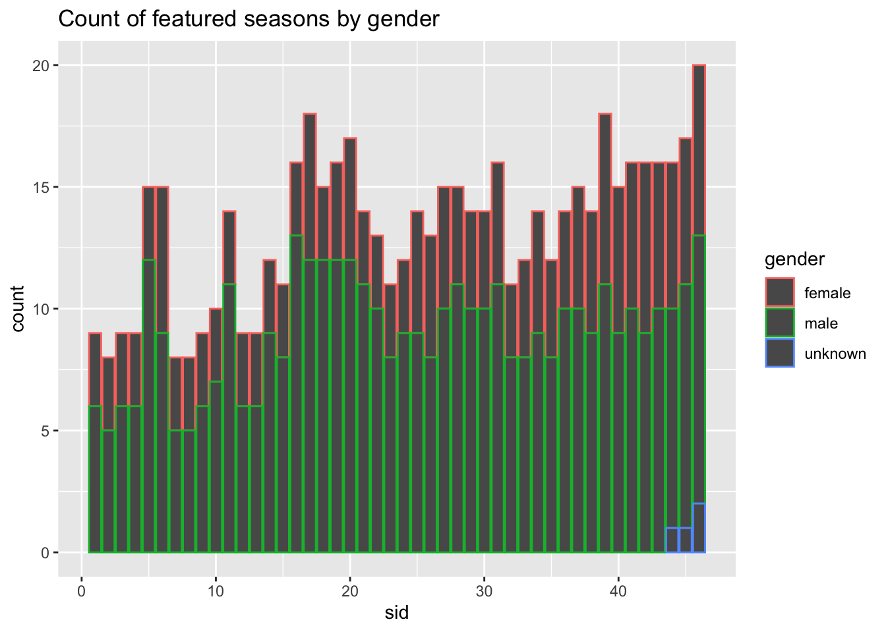

library(tidyverse)
library(ggplot2)
knitr::opts_chunk$set(echo = TRUE, warning=FALSE, message=FALSE)Challenge 8
challenge_8
Priyanka Perumalla
snl
Joining Data
Challenge Overview
Today’s challenge is to:
- read in multiple data sets, and describe the data set using both words and any supporting information (e.g., tables, etc)
- tidy data (as needed, including sanity checks)
- mutate variables as needed (including sanity checks)
- join two or more data sets and analyze some aspect of the joined data
(be sure to only include the category tags for the data you use!)
Read in data
Read in one (or more) of the following datasets, using the correct R package and command.
- military marriages ⭐⭐
- faostat ⭐⭐
- railroads ⭐⭐⭐
- fed_rate ⭐⭐⭐
- debt ⭐⭐⭐
- us_hh ⭐⭐⭐⭐
- snl ⭐⭐⭐⭐⭐
library(readr)
snl_actors_df <- read_csv("_data/snl_actors.csv")
snl_casts_df <- read_csv("_data/snl_casts.csv")
snl_seasons_df <- read_csv("_data/snl_seasons.csv")
head(snl_actors_df)# A tibble: 6 × 4
aid url type gender
<chr> <chr> <chr> <chr>
1 Kate McKinnon /Cast/?KaMc cast female
2 Alex Moffat /Cast/?AlMo cast male
3 Ego Nwodim /Cast/?EgNw cast unknown
4 Chris Redd /Cast/?ChRe cast male
5 Kenan Thompson /Cast/?KeTh cast male
6 Carey Mulligan /Guests/?3677 guest andy head(snl_casts_df)# A tibble: 6 × 8
aid sid featured first_epid last_epid update_anchor n_episodes
<chr> <dbl> <lgl> <dbl> <dbl> <lgl> <dbl>
1 A. Whitney Brown 11 TRUE 19860222 NA FALSE 8
2 A. Whitney Brown 12 TRUE NA NA FALSE 20
3 A. Whitney Brown 13 TRUE NA NA FALSE 13
4 A. Whitney Brown 14 TRUE NA NA FALSE 20
5 A. Whitney Brown 15 TRUE NA NA FALSE 20
6 A. Whitney Brown 16 TRUE NA NA FALSE 20
# ℹ 1 more variable: season_fraction <dbl>head(snl_seasons_df)# A tibble: 6 × 5
sid year first_epid last_epid n_episodes
<dbl> <dbl> <dbl> <dbl> <dbl>
1 1 1975 19751011 19760731 24
2 2 1976 19760918 19770521 22
3 3 1977 19770924 19780520 20
4 4 1978 19781007 19790526 20
5 5 1979 19791013 19800524 20
6 6 1980 19801115 19810411 13# Understanding the column names of the 3 data sets
colnames(snl_actors_df)[1] "aid" "url" "type" "gender"colnames(snl_casts_df)[1] "aid" "sid" "featured" "first_epid"
[5] "last_epid" "update_anchor" "n_episodes" "season_fraction"colnames(snl_seasons_df)[1] "sid" "year" "first_epid" "last_epid" "n_episodes"# Understanding the dimensions of the dataset
dim(snl_actors_df)[1] 2306 4dim(snl_casts_df)[1] 614 8dim(snl_seasons_df)[1] 46 5# Identifying the data types of the columns
sapply(snl_actors_df, class) aid url type gender
"character" "character" "character" "character" table(sapply(snl_actors_df, function(x) typeof(x)))
character
4 sapply(snl_seasons_df, class) sid year first_epid last_epid n_episodes
"numeric" "numeric" "numeric" "numeric" "numeric" table(sapply(snl_seasons_df, function(x) typeof(x)))
double
5 sapply(snl_casts_df, class) aid sid featured first_epid last_epid
"character" "numeric" "logical" "numeric" "numeric"
update_anchor n_episodes season_fraction
"logical" "numeric" "numeric" table(sapply(snl_casts_df, function(x) typeof(x)))
character double logical
1 5 2 Briefly describe the data
I have picked 3 datasets for this challenge. The three data sets I have chosen are snl_actors, snl_casts, snl_seasons data sets. The snl_actors data set has the details of the actors that appeared in a role and the type of their appearence, The snl_casts data set has information on the episodes and the seasons in which a particular actor was casted. The snl_seasons dataset has the information on every season of a series like the number of episodes, the year in which first episode was released, the year in which last episode was released etc. The First data set (snl_actors) has 2306 rows and 4 columns out of which all 4 are character type. The Second data set(snl_casts) has 614 rows and 8 columns out of which 1 is of type character, 5 double and 2 logical data types. The third data set (snl_seasons) has 46 rows and 5 columns of which everything but one is of type numeric. Actor ID (aid) is common in first two datasets. Season ID (sid) is common in second and third datasets.
Tidy Data (as needed)
Is your data already tidy, or is there work to be done? Be sure to anticipate your end result to provide a sanity check, and document your work here.
Checking to see how many entries in the snl_actors dataset has null values.
sum(is.na(snl_actors_df))[1] 57Checking to see how many entries in the snl_casts dataset has null values.
sum(is.na(snl_casts_df))[1] 1161Checking to see how many entries in the snl_seasons dataset has null values.
sum(is.na(snl_seasons_df))[1] 0We can observe that the snl_seasons_df is very tidy. The snl_actors data set is almost tidy as 57 is a very small number. The snl_casts data set is not very tidy and hence needs cleaning. But I don’t plan to clean to prevent loss of useful information.
Cleaning the snl_actors and snl_casts data set
#snl_actors_df<- na.omit(snl_actors_df)
#snl_casts_df<- na.omit(snl_casts_df)Are there any variables that require mutation to be usable in your analysis stream? For example, do you need to calculate new values in order to graph them? Can string values be represented numerically? Do you need to turn any variables into factors and reorder for ease of graphics and visualization?
Document your work here.
Since the column name type is very confusing, I have attempted to rename ‘type’ to ‘Appearence Type’
snl_actors_df <- snl_actors_df %>%
rename("Appearence Type"= "type")
head(snl_actors_df)# A tibble: 6 × 4
aid url `Appearence Type` gender
<chr> <chr> <chr> <chr>
1 Kate McKinnon /Cast/?KaMc cast female
2 Alex Moffat /Cast/?AlMo cast male
3 Ego Nwodim /Cast/?EgNw cast unknown
4 Chris Redd /Cast/?ChRe cast male
5 Kenan Thompson /Cast/?KeTh cast male
6 Carey Mulligan /Guests/?3677 guest andy Join Data
Be sure to include a sanity check, and double-check that case count is correct!
I would like to join data based on actor id and season id as stated previously.
snl_seasons_casts <- snl_seasons_df %>%
left_join(snl_casts_df, by = "sid")
snl_seasons_casts# A tibble: 614 × 12
sid year first_epid.x last_epid.x n_episodes.x aid featured first_epid.y
<dbl> <dbl> <dbl> <dbl> <dbl> <chr> <lgl> <dbl>
1 1 1975 19751011 19760731 24 Gild… FALSE NA
2 1 1975 19751011 19760731 24 Mich… FALSE NA
3 1 1975 19751011 19760731 24 Lara… FALSE NA
4 1 1975 19751011 19760731 24 Garr… FALSE NA
5 1 1975 19751011 19760731 24 Jane… FALSE NA
6 1 1975 19751011 19760731 24 Geor… FALSE NA
7 1 1975 19751011 19760731 24 Chev… FALSE NA
8 1 1975 19751011 19760731 24 John… FALSE NA
9 1 1975 19751011 19760731 24 Dan … FALSE NA
10 2 1976 19760918 19770521 22 Gild… FALSE NA
# ℹ 604 more rows
# ℹ 4 more variables: last_epid.y <dbl>, update_anchor <lgl>,
# n_episodes.y <dbl>, season_fraction <dbl>colnames(snl_seasons_casts) [1] "sid" "year" "first_epid.x" "last_epid.x"
[5] "n_episodes.x" "aid" "featured" "first_epid.y"
[9] "last_epid.y" "update_anchor" "n_episodes.y" "season_fraction"snl_actors_casts_seasons <- snl_actors_df %>%
left_join(snl_seasons_casts, by = "aid")
snl_actors_casts_seasons# A tibble: 2,764 × 15
aid url `Appearence Type` gender sid year first_epid.x last_epid.x
<chr> <chr> <chr> <chr> <dbl> <dbl> <dbl> <dbl>
1 Kate McK… /Cas… cast female 37 2011 20110924 20120519
2 Kate McK… /Cas… cast female 38 2012 20120915 20130518
3 Kate McK… /Cas… cast female 39 2013 20130928 20140517
4 Kate McK… /Cas… cast female 40 2014 20140927 20150516
5 Kate McK… /Cas… cast female 41 2015 20151003 20160521
6 Kate McK… /Cas… cast female 42 2016 20161001 20170520
7 Kate McK… /Cas… cast female 43 2017 20170930 20180519
8 Kate McK… /Cas… cast female 44 2018 20180929 20190518
9 Kate McK… /Cas… cast female 45 2019 20190928 20200509
10 Kate McK… /Cas… cast female 46 2020 20201003 20210410
# ℹ 2,754 more rows
# ℹ 7 more variables: n_episodes.x <dbl>, featured <lgl>, first_epid.y <dbl>,
# last_epid.y <dbl>, update_anchor <lgl>, n_episodes.y <dbl>,
# season_fraction <dbl>colnames(snl_actors_casts_seasons) [1] "aid" "url" "Appearence Type" "gender"
[5] "sid" "year" "first_epid.x" "last_epid.x"
[9] "n_episodes.x" "featured" "first_epid.y" "last_epid.y"
[13] "update_anchor" "n_episodes.y" "season_fraction"The above data frame is an overall combined data frame made from snl_actors, snl_casts, snl_seasons. We can use this to answer most of the analysis questions.
For example, we can use the joined data frame to observe how many seasons featured more women, more men or overall more features of any gender
snl_actors_casts_seasons %>%
ggplot(aes(sid,col=gender)) +
geom_bar() +
labs(title = "Count of featured seasons by gender")
We can also answer questions like
snl_actors_casts_seasons %>% filter(year >= 2005) %>%filter(sid >= 5) # A tibble: 242 × 15
aid url `Appearence Type` gender sid year first_epid.x last_epid.x
<chr> <chr> <chr> <chr> <dbl> <dbl> <dbl> <dbl>
1 Kate McK… /Cas… cast female 37 2011 20110924 20120519
2 Kate McK… /Cas… cast female 38 2012 20120915 20130518
3 Kate McK… /Cas… cast female 39 2013 20130928 20140517
4 Kate McK… /Cas… cast female 40 2014 20140927 20150516
5 Kate McK… /Cas… cast female 41 2015 20151003 20160521
6 Kate McK… /Cas… cast female 42 2016 20161001 20170520
7 Kate McK… /Cas… cast female 43 2017 20170930 20180519
8 Kate McK… /Cas… cast female 44 2018 20180929 20190518
9 Kate McK… /Cas… cast female 45 2019 20190928 20200509
10 Kate McK… /Cas… cast female 46 2020 20201003 20210410
# ℹ 232 more rows
# ℹ 7 more variables: n_episodes.x <dbl>, featured <lgl>, first_epid.y <dbl>,
# last_epid.y <dbl>, update_anchor <lgl>, n_episodes.y <dbl>,
# season_fraction <dbl>